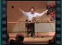

WinFX Rotterdam
Region: Netherlands
WinFX (.NET 3.0) - Windows Presentation Foundation (WPF), InfoCard (Windows CardSpace) & Windows Communication Foundation (WCF)
Speaker(s): Ami Vora, Paul Tallett
Downloads:
SDVideo
(ASF)
Slides
WinFX (.NET 3.0) - Workflow Foundation (WF)

Speaker(s): Clemens Vasters, Paul Tallett
Downloads:
SDVideo
(ASF)
Slides